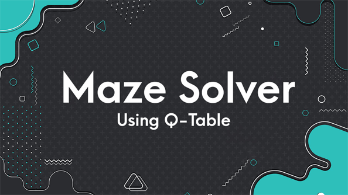

Having missed out on my last research internship due to covid, I was very persistent in making sure that I make up for that loss. This was crucial now that I was 100% sure that research and higher studies are my priority. Throughout the academic year, I pushed myself to learn as much as possible and complete most of my degree by the end of the third year. I successfully did so and am left with only one core course and a specialization project to complete my degree and specialization in robotics. Now that I was almost done with that, the next goal was to work on good projects. DSL810 and the MasterCard design challenge turned out to be two great projects I am proud of, but it was not related to Robotics.
With all this being the situation and the pandemic not showing any signs of vanishing, I decided to try for a good online internship and prep for GRE in the comfort of my home. I had been looking out for professors working on domains I found fascinating. However, there was one team that had my attention since last year, Marmot Lab (NUS) . The lab focused on Multi-Agent robotics which was one of the domains I was looking forward to exploring. I had heard a lot about them from Priyanshi, who interned with them last summer. I ended up contacting Prof.Guillaume, who responded positively and welcomed me onboard. The meetings with the team were very much different from what I had expected. Like Jay sir, he was also keen on his students coming up with their research ideas and projects. The meetings were similar to a chat between a bunch of colleagues, a very stress-free but, at the same time, very productive environment. Since I had chosen to work on Multi-agent search (over hexapod robots, which would have been more involved with what I learned in JRL302 and MCL745 and more kinematics intensive), I had limited knowledge about what was being discussed. Still, with the help of google on the side, I was able to figure out a good part of it. Even though some of my friends were confused about my choice of MA search over Hexapod, I was very much interested in learning the new domain. The resources provided by Prof. were beneficial in catching the basics.
As I mentioned earlier, just like Jay sir, Prof.Guillaume also expected his students to develop their project proposals. Along with learning the new domain, I was also going through the research by the team. My initial idea was to look at something along the lines of mapping inspired by their current MA Search. However, after discussions with the team, I realized that it was not as connected to MA Search as I thought it was. However, I found another idea that came up in the meeting quite fascinating. It was linked to multi-agents with some form of consumable resource in it. Prof.Guillaume also asked me to go through ForMIC, a previous project of his for some more inspiration. After a thorough analysis of the paper and motivation from the meeting discussions, I came up with the following proposal, which Prof. found interesting and encouraged me to work on.
Click this image for complete presentation.
After finalizing my project, I started working on implementing it. Brushing up on the Neural network knowledge from last summer and also exploring the existing ForMIC code. The project is very intersting and I have decided to stick to it untill I complete it and maybe even after that.
This program solves the Open Ai gym maze environment using Q-Tables to find the shortest path from start to finish using Q-Table. The program works for all the different mazes available in the library. The algorithm used follows the Bellman's Equation to create the Q table. After learning, the Q-table is directly used to make decisions in the simulation phase to find the best action at a particular state. The maze environment used is available here . The project repository is Maze-Solver . This project helped me implement my learnings on Q-table and also apply the concepts to real life applications.
As mentioned earlier, the learning time for my neural network was very high. Hence, I decided to implement an A3C model (Asynchronous Actor Crytic model) which has the capability to learn faster. I had a hard time understanding the implement even though the basic idea was straight forward. This blog was a very good read (link)
. Having taken my neural network course a year ago, I really needed to brush up on it. This playlist is a good revision modules for Neural Networks (link). For a quick guide on the different types of neural networks, this blog will be useful (link). Using the same environment as int he Q-learning model, I was able to implement an agent using neural network for generating Q values for each state. The learning process took more time (almost 1 hr) in agent using Neural network since it is more computationally exhaustive and I am running this on my PC. However, they gave the desired results for similar mazes within comparable episodes. The project repository is Maze-Solver-NN. My project will require both CNNs and LSTM networks. This blog was helpful in easily understanding CNNs (link). For understanding LSTM networks, this blog was helpful (link). The more I dive into RL and Neural networks, the more interesting it gets. The digitalization of the fundamental workings of the human brain is indeed an amazing feat. Also day by day Bellman's equation looks more and more elegant. A single equation that forms the backbone of RL.
Since A3C requires multiple agents to work simultaneously but seperately, I was confused about such a process could be implemented since from the basic classes in computer science, my teachers have taught me one golden rule that "one statement is executed at a time". The closest I could think for implementing the required process was a loop in which agentes would be updated seperately in a manner but this to seemed very hectic and cumbersome. Well python seems to have thought of such a problem before hand and introduced threading. I was great to know about the existance of such a solution. I would strongly recommend goin through this blog (link). Thread locking was also a tool that I had difficulty in figuring out since for some reason, I was stuck with the idea that it was something that was created by the authors since my initial web search didn't yield good results. However, now I completely understand the beauty of the concept and its need. This blog was helpful for it (link).
Once I started going through the ForMIC code a few months ago, I encountered a lot of new functions. Most of them had very little to do with the main idea behind ForMIC and was more related to the basic implementation of A3C (I took some time to realize this and spent a good amount of time trying to figure out what concept in ForMIC was threadlocking tryning to implement :P). However the satisfaction of figuring it out on my own was worth the effort. The the simplicity of these concepts continue to amaze me. This blog was helpful (link). The following video was also insightful.
Partial observability in agents is common in real life scenarios and hence need to be incorporated in simulations for achieving results that are more relevant to real life iiplementations. In our project, the partial observability is implemented via limited field of view. To mitigate such partial observability, during training some means of centralization is employed which enables the agent to learn better and encourage cooperation. Such implementations increases the stability of learning and also improves the policies. In general, certain conditions that let the agent know that the decisions are wrong help in better learning. The valid step classification in ForMIC is such an example.[Reference:ForMIC]
The past two weeks have been very productive. I have understood more than 80% of the existing code and also iplemented more than 60% of the changes required in it. The learning curve has also been very steep and I was also able to improve my proposed solution with multiple itterations along with developing significant reasoning for the advantages of these implementations. Yesterday I felt like I was forgetting the escence of the original Paper and decided to take a day off and also read the original publication again. I have the multiple itterations of reading the code and the paper had proven to be useful in understanding each other better. The previous section contains insights from yesterdays readings.
I was able to complete the implementation of the search using two forms of communication. However, during our meetings prof suggested a new outlook in which the problem I was trying to solve could be navigated using only pheromones as well. This can address the limitation of pheromone based search in the case of discrete targets. Unlike continuous targets, discrete targets provide additional scenarios during interactions between target and agent. Hence the modified approach will enable us to overcome these problems.